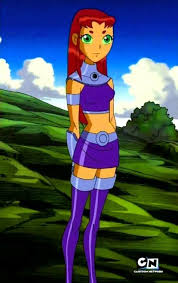
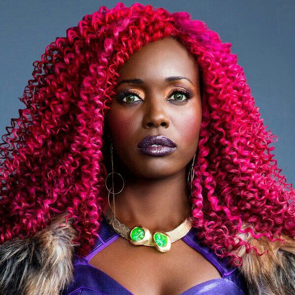

Aqui estão alguns fatos observados em relação as adaptações dos desenhos para as conhecidas live action. Estelar é uma princesa alienígena do mundo distante de Tamaran e um dos cinco membros fundadores dos Jovens Titãs. Ela também é o principal interesse amoroso de Robin e finalmente se torna sua namorada no filme final da série.

Referências originais.Estelar (Starfire no original; literalmente "Fogo Estelar" ou "Estrela de Fogo"), também conhecida por seu verdadeiro nome, Koriand'r, é uma personagem fictícia de histórias em quadrinhos publicadas pela editora americana DC Comics. Koriand'r é uma princesa alienígena do planeta Tamaran, que juntamente com Ravena e Ciborgue é uma personagem criada por Marv Wolfman e George Pérez exclusivamente para a estreia dos Novos Titãs[1] em 1980 na edição #26 da série DC Comics Presents.

Baseados na informações de wikipedia